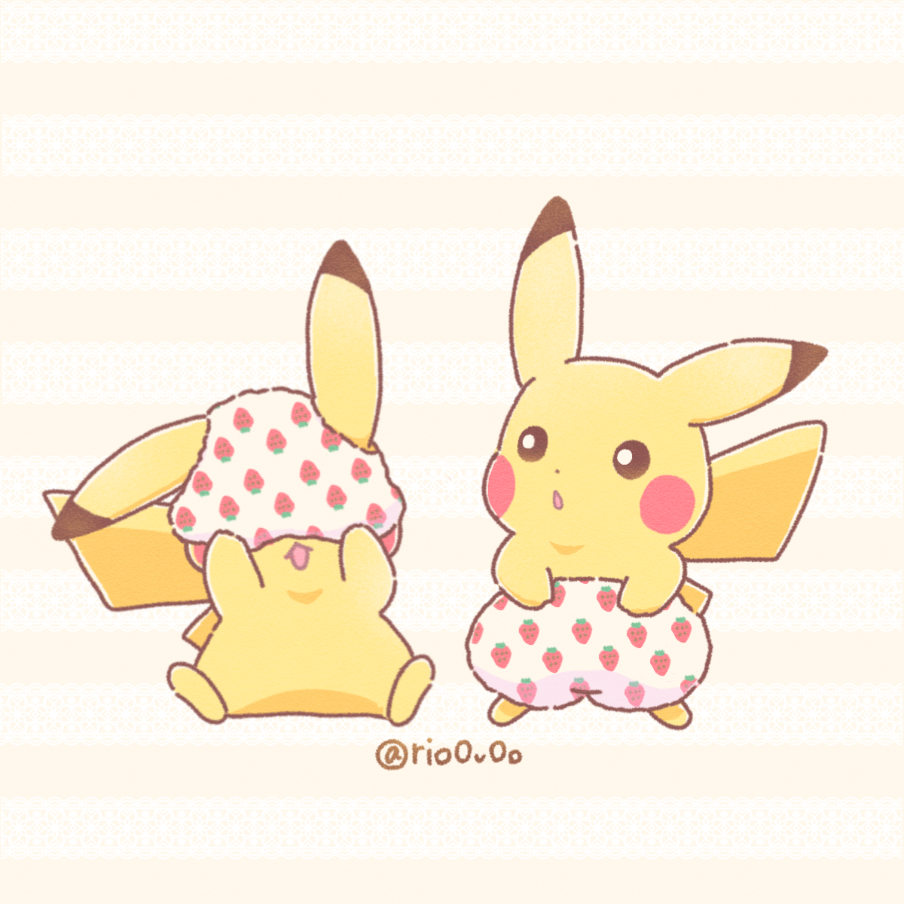

{{state.main.tmp.panel[0].toUpperCase() + state.main.tmp.panel.slice(1)}}
{{state.main.options.rooms.filter(x => state.main.tmp.tryrooms?.[JSON.stringify([x.id, x.name])]).length}}
{{x}}
×
{{x}}
no such tag found
🙍🏻♂️
Display Name
🔑
OpenAI Key
🔑
xAI Key
🏷️
Automatic Tagging
1️⃣
Unary Messaging
😏
Show Erotica
Start a new thread!
Archives are empty.
{{room.name}}
{{thread.name || '...'}}
My Threads
{{thread.name || '...'}}
{{thread.rooms?.length}}
Create or join a new room!
{{room.name || '...'}} {{state.main.vectors(JSON.stringify([room.id, room.name])).length ? `「${state.main.vectors(JSON.stringify([room.id, room.name])).length}」` : ''}}
{{vec.displayName || vec.id}}
Create Room
Join Room
New Thread
🔑
Add at least 1 API key to start chatting.
Create a thread to start chatting!
{{state.main.thread.name || '...'}}
🥵
{{state.main.thread.tags?.length || state.main.tmp.showTagInput ? 'Tags:' : 'Tags'}}
{{x}}
×
{{x}}
🥵
Start a conversation!
{{state.main.lastDisplayNames[log.author] || `Anonymous User`}}
Log content...

{{log.model}}
Log content...
{{x.id.split(':')[1]}}
{{new Date(x.created * 1000).toLocaleString('en-US', { month: 'short', year: 'numeric' })}}
{{state.main.model.split(':')[1]}}